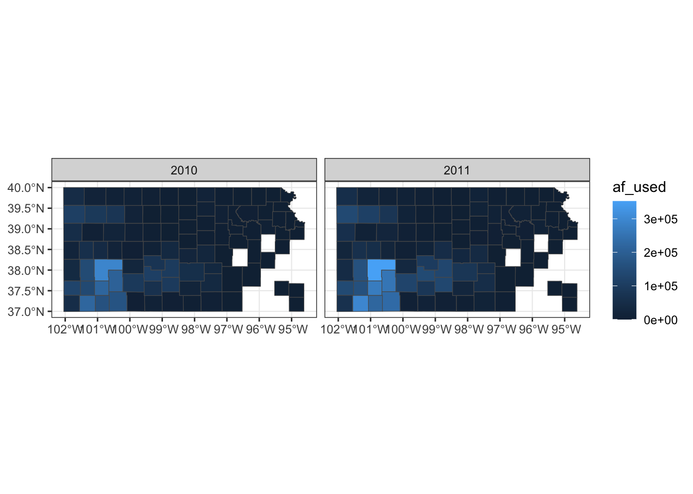
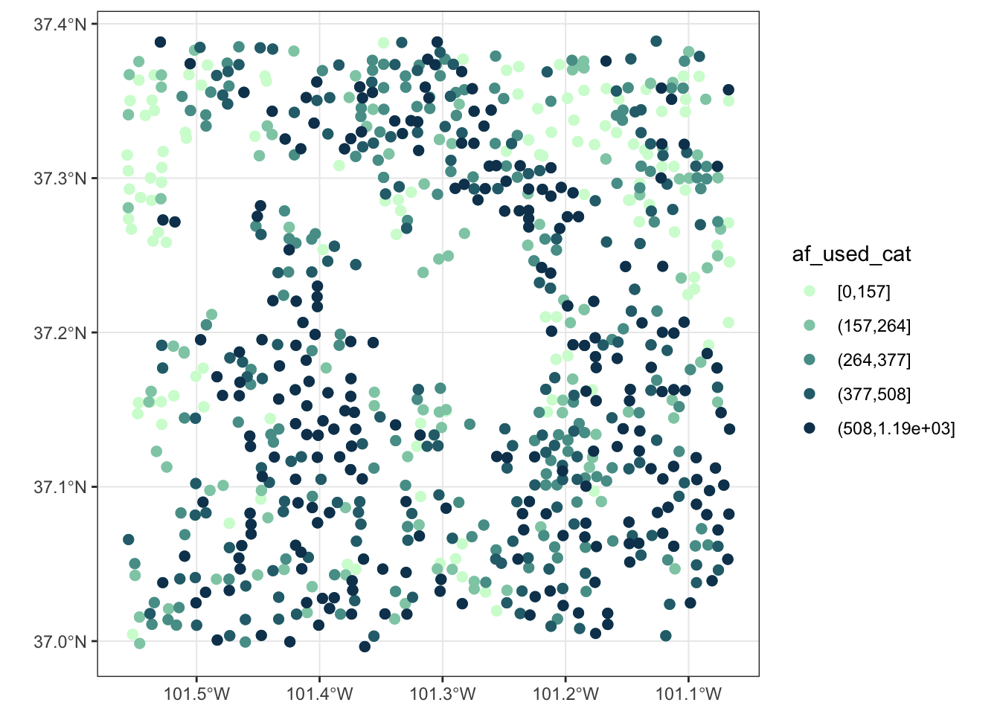
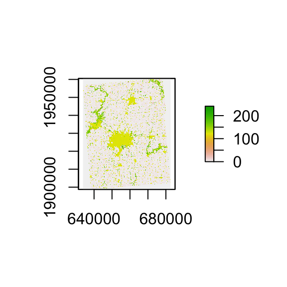
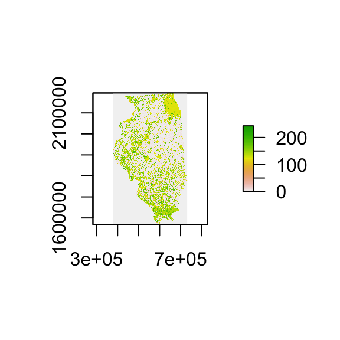

8.5 Fine-tuning maps for publication
This section presents a number of small tips to beautify your maps so that they can be publishable in professional reports. Often times, academic journals have their own particular sets of rules about figures, and reviewers or your boss might have their own views of what maps should look like. Whatever the requirements or requests, you need to accommodate their requests and modify the maps accordingly. It is worth mentioning that there is really nothing specific to creating maps here. Techniques presented here are applicable to any kind of figure. It is just that we limit ourselves to specific components of a figure that you are likely to want to modify from the default when creating maps. Specifically, pre-made ggplot2 themes and how to modify legends and facet strips are discussed.
(
gw_by_county <- st_join(KS_county, gw_KS_sf) %>%
data.table() %>%
.[, .(af_used = sum(af_used, na.rm = TRUE)), by = .(COUNTYFP, year)] %>%
left_join(KS_county, ., by = c("COUNTYFP")) %>%
filter(!is.na(year))
)Simple feature collection with 184 features and 11 fields
geometry type: POLYGON
dimension: XY
bbox: xmin: -102.0517 ymin: 36.99302 xmax: -94.58841 ymax: 40.00316
geographic CRS: NAD83
First 10 features:
STATEFP COUNTYFP COUNTYNS AFFGEOID GEOID NAME LSAD ALAND
1 20 053 00484996 0500000US20053 20053 Ellsworth 06 1853331063
2 20 053 00484996 0500000US20053 20053 Ellsworth 06 1853331063
3 20 095 00485012 0500000US20095 20095 Kingman 06 2236100137
4 20 095 00485012 0500000US20095 20095 Kingman 06 2236100137
5 20 135 00485031 0500000US20135 20135 Ness 06 2783562240
6 20 135 00485031 0500000US20135 20135 Ness 06 2783562240
7 20 199 00485060 0500000US20199 20199 Wallace 06 2366348284
8 20 199 00485060 0500000US20199 20199 Wallace 06 2366348284
9 20 069 00485001 0500000US20069 20069 Gray 06 2250356170
10 20 069 00485001 0500000US20069 20069 Gray 06 2250356170
AWATER year af_used geometry
1 19969761 2010 93.0000 POLYGON ((-98.48554 38.7839...
2 19969761 2011 216.2429 POLYGON ((-98.48554 38.7839...
3 8536908 2010 17276.8266 POLYGON ((-98.46489 37.6453...
4 8536908 2011 23494.8605 POLYGON ((-98.46489 37.6453...
5 667491 2010 3435.3507 POLYGON ((-100.2477 38.6544...
6 667491 2011 5922.7644 POLYGON ((-100.2477 38.6544...
7 140936 2010 49764.0469 POLYGON ((-102.0472 39.1331...
8 140936 2011 59961.6326 POLYGON ((-102.0472 39.1331...
9 1113338 2010 206227.2389 POLYGON ((-100.665 37.86809...
10 1113338 2011 255934.0108 POLYGON ((-100.665 37.86809...
8.5.1 Setting the theme
Right now, the map shows geographic coordinates, gray background, and grid lines. They are not very aesthetically appealing. Adding the pre-defined theme by theme_*() can alter the theme of a map very quickly. One of the themes suitable for maps is theme_void().

As you can see, all the axes information (axis.title, axis.ticks, axis.text,) and panel information (panel.background, panel.border, panel.grid) are gone among other parts of the figure. You can confirm this by evaluating theme_void().
List of 92
$ line : list()
..- attr(*, "class")= chr [1:2] "element_blank" "element"
$ rect : list()
..- attr(*, "class")= chr [1:2] "element_blank" "element"
$ text :List of 11
..$ family : chr ""
..$ face : chr "plain"
..$ colour : chr "black"
..$ size : num 11
..$ hjust : num 0.5
..$ vjust : num 0.5
..$ angle : num 0
..$ lineheight : num 0.9
..$ margin : 'margin' num [1:4] 0points 0points 0points 0points
.. ..- attr(*, "unit")= int 8
..$ debug : logi FALSE
..$ inherit.blank: logi TRUE
..- attr(*, "class")= chr [1:2] "element_text" "element"
$ title : NULL
$ aspect.ratio : NULL
$ axis.title : list()
..- attr(*, "class")= chr [1:2] "element_blank" "element"
$ axis.title.x : NULL
$ axis.title.x.top : NULL
$ axis.title.x.bottom : NULL
$ axis.title.y : NULL
$ axis.title.y.left : NULL
$ axis.title.y.right : NULL
$ axis.text : list()
..- attr(*, "class")= chr [1:2] "element_blank" "element"
$ axis.text.x : NULL
$ axis.text.x.top : NULL
$ axis.text.x.bottom : NULL
$ axis.text.y : NULL
$ axis.text.y.left : NULL
$ axis.text.y.right : NULL
$ axis.ticks : NULL
$ axis.ticks.x : NULL
$ axis.ticks.x.top : NULL
$ axis.ticks.x.bottom : NULL
$ axis.ticks.y : NULL
$ axis.ticks.y.left : NULL
$ axis.ticks.y.right : NULL
$ axis.ticks.length : 'simpleUnit' num 0points
..- attr(*, "unit")= int 8
$ axis.ticks.length.x : NULL
$ axis.ticks.length.x.top : NULL
$ axis.ticks.length.x.bottom: NULL
$ axis.ticks.length.y : NULL
$ axis.ticks.length.y.left : NULL
$ axis.ticks.length.y.right : NULL
$ axis.line : NULL
$ axis.line.x : NULL
$ axis.line.x.top : NULL
$ axis.line.x.bottom : NULL
$ axis.line.y : NULL
$ axis.line.y.left : NULL
$ axis.line.y.right : NULL
$ legend.background : NULL
$ legend.margin : NULL
$ legend.spacing : NULL
$ legend.spacing.x : NULL
$ legend.spacing.y : NULL
$ legend.key : NULL
$ legend.key.size : 'simpleUnit' num 1.2lines
..- attr(*, "unit")= int 3
$ legend.key.height : NULL
$ legend.key.width : NULL
$ legend.text :List of 11
..$ family : NULL
..$ face : NULL
..$ colour : NULL
..$ size : 'rel' num 0.8
..$ hjust : NULL
..$ vjust : NULL
..$ angle : NULL
..$ lineheight : NULL
..$ margin : NULL
..$ debug : NULL
..$ inherit.blank: logi TRUE
..- attr(*, "class")= chr [1:2] "element_text" "element"
$ legend.text.align : NULL
$ legend.title :List of 11
..$ family : NULL
..$ face : NULL
..$ colour : NULL
..$ size : NULL
..$ hjust : num 0
..$ vjust : NULL
..$ angle : NULL
..$ lineheight : NULL
..$ margin : NULL
..$ debug : NULL
..$ inherit.blank: logi TRUE
..- attr(*, "class")= chr [1:2] "element_text" "element"
$ legend.title.align : NULL
$ legend.position : chr "right"
$ legend.direction : NULL
$ legend.justification : NULL
$ legend.box : NULL
$ legend.box.just : NULL
$ legend.box.margin : NULL
$ legend.box.background : NULL
$ legend.box.spacing : NULL
$ panel.background : NULL
$ panel.border : NULL
$ panel.spacing : 'simpleUnit' num 5.5points
..- attr(*, "unit")= int 8
$ panel.spacing.x : NULL
$ panel.spacing.y : NULL
$ panel.grid : NULL
$ panel.grid.major : NULL
$ panel.grid.minor : NULL
$ panel.grid.major.x : NULL
$ panel.grid.major.y : NULL
$ panel.grid.minor.x : NULL
$ panel.grid.minor.y : NULL
$ panel.ontop : logi FALSE
$ plot.background : NULL
$ plot.title :List of 11
..$ family : NULL
..$ face : NULL
..$ colour : NULL
..$ size : 'rel' num 1.2
..$ hjust : num 0
..$ vjust : num 1
..$ angle : NULL
..$ lineheight : NULL
..$ margin : 'margin' num [1:4] 5.5points 0points 0points 0points
.. ..- attr(*, "unit")= int 8
..$ debug : NULL
..$ inherit.blank: logi TRUE
..- attr(*, "class")= chr [1:2] "element_text" "element"
$ plot.title.position : chr "panel"
$ plot.subtitle :List of 11
..$ family : NULL
..$ face : NULL
..$ colour : NULL
..$ size : NULL
..$ hjust : num 0
..$ vjust : num 1
..$ angle : NULL
..$ lineheight : NULL
..$ margin : 'margin' num [1:4] 5.5points 0points 0points 0points
.. ..- attr(*, "unit")= int 8
..$ debug : NULL
..$ inherit.blank: logi TRUE
..- attr(*, "class")= chr [1:2] "element_text" "element"
$ plot.caption :List of 11
..$ family : NULL
..$ face : NULL
..$ colour : NULL
..$ size : 'rel' num 0.8
..$ hjust : num 1
..$ vjust : num 1
..$ angle : NULL
..$ lineheight : NULL
..$ margin : 'margin' num [1:4] 5.5points 0points 0points 0points
.. ..- attr(*, "unit")= int 8
..$ debug : NULL
..$ inherit.blank: logi TRUE
..- attr(*, "class")= chr [1:2] "element_text" "element"
$ plot.caption.position : chr "panel"
$ plot.tag :List of 11
..$ family : NULL
..$ face : NULL
..$ colour : NULL
..$ size : 'rel' num 1.2
..$ hjust : num 0.5
..$ vjust : num 0.5
..$ angle : NULL
..$ lineheight : NULL
..$ margin : NULL
..$ debug : NULL
..$ inherit.blank: logi TRUE
..- attr(*, "class")= chr [1:2] "element_text" "element"
$ plot.tag.position : chr "topleft"
$ plot.margin : 'simpleUnit' num [1:4] 0lines 0lines 0lines 0lines
..- attr(*, "unit")= int 3
$ strip.background : NULL
$ strip.background.x : NULL
$ strip.background.y : NULL
$ strip.placement : NULL
$ strip.text :List of 11
..$ family : NULL
..$ face : NULL
..$ colour : NULL
..$ size : 'rel' num 0.8
..$ hjust : NULL
..$ vjust : NULL
..$ angle : NULL
..$ lineheight : NULL
..$ margin : NULL
..$ debug : NULL
..$ inherit.blank: logi TRUE
..- attr(*, "class")= chr [1:2] "element_text" "element"
$ strip.text.x : NULL
$ strip.text.y : NULL
$ strip.switch.pad.grid : 'simpleUnit' num 2.75points
..- attr(*, "unit")= int 8
$ strip.switch.pad.wrap : 'simpleUnit' num 2.75points
..- attr(*, "unit")= int 8
- attr(*, "class")= chr [1:2] "theme" "gg"
- attr(*, "complete")= logi TRUE
- attr(*, "validate")= logi TRUEApplying the theme to a map obviates the need to suppress parts of a figure individually. You can suppress parts of the figure individually using theme(). For example, the following code gets rid of axis.text.

So, if theme_void() is overdoing things, you can build your own theme specifically for maps. For example, this is the theme I used for maps in Chapter 1.
theme_for_map <- theme(
axis.ticks = element_blank(),
axis.text= element_blank(),
axis.line = element_blank(),
panel.border = element_blank(),
panel.grid = element_line(color='transparent'),
panel.background = element_blank(),
plot.background = element_rect(fill = "transparent",color='transparent')
)Applying the theme to the map:

This is very similar to theme_void() except that strip.background is not lost.
You can use theme_void() as a starting point and override components of it like this.
#--- bring back a color to strip.background ---#
theme_for_map_2 <- theme_void() + theme(strip.background = element_rect(fill = "gray"))
#--- apply the new theme ---#
g_base + theme_for_map_2
theme_bw() is also a good theme for maps.

If you do not like the gray grid lines, you can remove them like this.
ggplot() +
geom_sf(data = gw_by_county, aes(fill = af_used)) +
facet_grid(year ~ .) +
theme_bw() +
theme(
panel.grid = element_line(color='transparent')
)
Not all themes are suitable for maps. For example, theme_classic() is not a very good option as you can see below:
If you are not satisfied with theme_void() and not willing to make up your own theme, then you may want to take a look at other pre-made themes that are available from ggplot2 (see here) and ggthemes (see here). Note that some themes are more invasive than theme_void(), altering the default color scale.
8.5.2 Legend
Legends can be modified using legend.*() options for theme() and guide_*(). It is impossible to discuss every single one of all the options for these functions. So, this section focuses on the most common and useful (that I consider) modifications you can make to legends.
A legend consists of three elements: legend title, legend key (e.g., color bar), and legend label (or legend text). For example, in the figure below, af_used is the legend title, the color bar is the legend key, and the numbers below the color bar are legend labels. Knowing the name of these elements helps because the name of the options contains the name of the specific part of the legend.
(
g_legend <- ggplot() +
geom_sf(data = gw_by_county, aes(fill = af_used)) +
facet_wrap(. ~ year) +
theme_void()
)
Lets first change the color scale to Viridis using scale_fill_viridis_c() (see section 8.3 for picking a color scale).

Right now, the legend title is af_used, which does not tell the readers what it means. In general, you can change the title of a legend by using the name option inside the scale function for the legend (here, scale_fill_viridis_c()). So, this one works:

Alternatively, you can use labs() function.95. Since the legend is for the fill aesthetic attribute, you should add fill = "legend title" as follows:

Since the legend title is long, the legend is taking up about the half of the space of the entire figure. So, lets put the legend below the maps (bottom of the figure) by adding theme(legend.position = "bottom").
g_legend +
scale_fill_viridis_c() +
labs(fill = "Groundwater pumping (acre-feet)") +
theme(legend.position = "bottom")
It would be aesthetically better to have the legend title on top of the color bar. This can be done by using the guides() function. Since we would like to alter the aesthetics of the legend for fill involving a color bar, we use fill = guide_colorbar(). To place the legend title on top, you add title.position="top" inside the guide_colorbar() function as follows:
g_legend +
scale_fill_viridis_c() +
labs(fill = "Groundwater pumping (acre-feet)") +
theme(legend.position = "bottom") +
guides(fill = guide_colorbar(title.position="top"))
This looks better. But, the legend labels are too close to each other so it is hard to read them because the color bar is too short. Lets elongate the color bar so that we have enough space between legend labels using legend.key.width = option for theme(). Lets also make the legend thinner using legend.key.height = option.
g_legend +
scale_fill_viridis_c() +
labs(fill = "Groundwater pumping (acre-feet)") +
theme(
legend.position = "bottom",
#--- NEW LINES HERE!! ---#
legend.key.height = unit(0.5, "cm"),
legend.key.width = unit(2, "cm")
) +
guides(fill = guide_colorbar(title.position="top"))
If the journal you are submitting an article to is requesting a specific font family for the texts in the figure, you can use legend.text = element_text() and legend.title = element_text() inside theme() for the legend labels and legend title, respectively. The following code uses the font family of Times and font size of 12 for both the labels and the title.
g_legend +
scale_fill_viridis_c() +
labs(fill = "Groundwater pumping (acre-feet)") +
theme(
legend.position = "bottom",
legend.key.height = unit(0.5, "cm"),
legend.key.width = unit(2, "cm"),
legend.text = element_text(size = 12, family = "Times"),
legend.title = element_text(size = 12, family = "Times")
#--- NEW LINES HERE!! ---#
) +
guides(fill = guide_colorbar(title.position="top"))
For the other options to control the legend with a color bar, see here.
When the legend is made for discrete values, you can use guide_legend(). Lets use the following map as a starting point.
#--- convert af_used to a discrete variable ---#
gw_Stevens <- mutate(gw_Stevens, af_used_cat = cut_number(af_used, n = 5))
(
g_legend_2 <- ggplot(data = gw_Stevens) +
geom_sf(aes(color = af_used_cat), size = 2) +
scale_color_viridis(discrete = TRUE, option = "C") +
labs(color = "Groundwater pumping (acre-feet)") +
theme_void() +
theme(legend.position = "bottom")
)
The legend is too long, so first put the legend title on top of the legend labels using the code below:

Since the legend is for the color aesthetic attribute, color = guide_legend() was used. The legend labels are still a bit too long, so lets arrange them in two rows using the nrow = option.

For the other options for guide_legend(), see here.
8.5.3 Facet strips
Facet strips refer to the area of boxed where the values of faceting variables are printed. In the figure below, its gray strips on top of the maps. You can change how they look using strip.* options in theme() and also partially inside facet_wrap() and facet_grid(). Here is the list of available options:
strip.background,strip.background.x,strip.background.ystrip.placementstrip.text,strip.text.x,strip.text.ystrip.switch.pad.gridstrip.switch.pad.wrap
ggplot() +
#--- KS county boundary ---#
geom_sf(data = st_transform(KS_county, 32614)) +
#--- wells ---#
geom_sf(data = gw_KS_sf, aes(color = af_used)) +
#--- facet by year (side by side) ---#
facet_wrap((af_used > 500) ~ year) +
theme_void() +
scale_color_viridis_c() +
theme(legend.position = "bottom")
To make texts in the strips more descriptive of what they actually mean you can make variable that have texts you want to show on the map as their values.
gw_KS_sf <- gw_KS_sf %>%
mutate(
high_low = ifelse(af_used > 500, "High water use", "Low water use"),
year_txt = paste("Year: ", year)
)
(
g_facet <- ggplot() +
#--- KS county boundary ---#
geom_sf(data = st_transform(KS_county, 32614)) +
#--- wells ---#
geom_sf(data = gw_KS_sf, aes(color = af_used)) +
#--- facet by year (side by side) ---#
facet_wrap(high_low ~ year_txt) +
theme_void() +
scale_color_viridis_c() +
theme(legend.position = "bottom")
)
You probably noticed that the high water use cases are now appear on top. This is because the panels of figures are arranged in a way that the strip texts are alphabetically ordered. High water use precedes Low water use. Sometimes, this is not desirable. To force a specific order, you can turn the faceting variable (here high_low) into a factor with the order of its values defined using levels =. The following code converts high_low into a factor where Low water use is the first level and High water use is the second level.
gw_KS_sf <- mutate(gw_KS_sf, high_low = factor(high_low, levels = c("Low water use", "High water use")))Now, Low water use cases appear first (on top).
g_facet <- ggplot() +
#--- KS county boundary ---#
geom_sf(data = st_transform(KS_county, 32614)) +
#--- wells ---#
geom_sf(data = gw_KS_sf, aes(color = af_used)) +
#--- facet by year (side by side) ---#
facet_wrap(high_low ~ year_txt) +
theme_void() +
scale_color_viridis_c() +
theme(legend.position = "bottom")
g_facet
You can control how strip texts and strip boxes appear using strip.text and strip.background options. Here is an example:
g_facet + theme(
strip.text.x = element_text(size = 12, family = "Times", color = "blue"),
strip.background = element_rect(fill = "red", color = "black")
) 
Instead of having descriptions of cases on top of the figures, you could have one of the descriptions on the right side of the figures using facet_grid().

Now case descriptions for high_low are too long and it is squeezing the space for maps. Lets flip high_low and year.

This is slightly better than before, but not much. Lets rotate strip texts for year using the angle = option.
g_facet +
#--- this overrides facet_grid(high_low ~ year_txt) ---#
facet_grid(year_txt ~ high_low) +
theme(
strip.text.y = element_text(angle = - 90)
)
Since we only want to change the angle of strip texts for the second faceting variable, we need to work on strip.text.y (if you want to work on the first one, you use strip.text.x.).
Lets change the size of the strip texts to 12 and use Times font family.
g_facet +
#--- this overrides facet_grid(high_low ~ year_txt) ---#
facet_grid(year_txt ~ high_low) +
theme(
strip.text.y = element_text(angle = - 90, size = 12, family = "Times"),
#--- moves up the strip texts ---#
strip.text.x = element_text(size = 12, family = "Times")
)
The strip texts for high_low are too close to maps that letter g in High is truncated. Lets move them up.
g_facet +
#--- this overrides facet_grid(high_low ~ year_txt) ---#
facet_grid(year_txt ~ high_low) +
theme(
strip.text.y = element_text(angle = - 90, size = 12, family = "Times"),
#--- moves up the strip texts ---#
strip.text.x = element_text(vjust = 2, size = 12, family = "Times")
)
Now the upper part of the letters is truncated. We could just put more margin below the texts using the margin = margin(top, right, bottom, left, unit in text) option.
g_facet +
#--- this overrides facet_grid(high_low ~ year_txt) ---#
facet_grid(year_txt ~ high_low) +
theme(
strip.text.y = element_text(angle = - 90, size = 12, family = "Times"),
strip.text.x = element_text(margin = margin(0, 0, 0.2, 0, "cm"), size = 12, family = "Times")
)
For completeness, lets make the legend look better as well (this is discussed in section 8.5.1).
(
g_facet <- g_facet +
#--- this overrides facet_grid(high_low ~ year_txt) ---#
facet_grid(year_txt ~ high_low) +
theme(
strip.text.y = element_text(angle = - 90, size = 12, family = "Times"),
strip.text.x = element_text(margin = margin(0, 0, 0.2, 0, "cm"), size = 12, family = "Times")
) +
theme(legend.position = "bottom") +
labs(color = "Groundwater pumping (acre-feet)") +
theme(
legend.position = "bottom",
legend.key.height = unit(0.5, "cm"),
legend.key.width = unit(2, "cm"),
legend.text = element_text(size = 12, family = "Times"),
legend.title = element_text(size = 12, family = "Times")
#--- NEW LINES HERE!! ---#
) +
guides(color = guide_colorbar(title.position="top"))
)
Alright, setting aside the problem of whether the information provided in the maps is meaningful or not, the maps look great at least.
8.5.4 North arrow and scale bar
The ggspatial package lets you put a north arrow and scale bar on a map using annotation_scale() and annotation_north_arrow().
#--- get North Carolina county borders ---#
nc <- st_read(system.file("shape/nc.shp", package="sf")) Reading layer `nc' from data source `/Library/Frameworks/R.framework/Versions/4.0/Resources/library/sf/shape/nc.shp' using driver `ESRI Shapefile'
Simple feature collection with 100 features and 14 fields
geometry type: MULTIPOLYGON
dimension: XY
bbox: xmin: -84.32385 ymin: 33.88199 xmax: -75.45698 ymax: 36.58965
geographic CRS: NAD27
Here is an example code that adds a scale bar:
#--- load ggspatial ---#
library(ggspatial)
#--- add scale bar ---#
g_nc +
annotation_scale(
location = "bl",
width_hint = 0.2
) location determines where the scale bar is. The first letter is either t (top) or b (bottom), and the second letter is either l (left) or r (right). width_hint is the length of the scale bar relative to the plot. The distance number (200 km) was generated automatically according to the length of the bar.
You can add pads from the plot border to fine tune the location of the scale bar:

A positive number means that the scale bar will be placed further away from closest border of the plot.
You can add a north arrow using annotation_north_arrow(). Accepted arguments are similar to those for annotation_scale().
g_nc +
annotation_scale(
location = "bl",
width_hint = 0.2,
pad_x = unit(3, "cm")
) +
#--- add north arrow ---#
annotation_north_arrow(
location = "tl",
pad_x = unit(0.5, "in"),
pad_y = unit(0.1, "in"),
style = north_arrow_fancy_orienteering
) 
There are several styles you can pick from. Run ?north_arrow_orienteering to see other options.